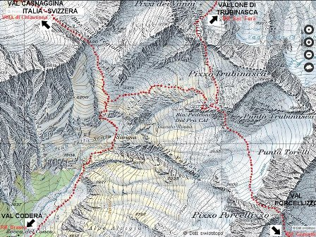

Eravamo venuti a sapere, io e il Danilo, giovani e studenti, che in alta Val Codera verso il Pizzo Trubinasca c'erano le pegmatiti.
E in quelle pegmatiti sapevamo pure che con accettabile probabilità ("accettabile probabilità" lo dico adesso, allora dicevamo "CERTEZZA ASSOLUTA") avremmo trovato il silicoalluminato di berillio Be3Al2Si6O18, varietà acquamarina.
Le acquemarine, le sorelline dello smeraldo! Roba grossa, roba da andarci di corsa!
E di corsa ci andammo, vedendoci già in possesso di azzurrini cristalli da far invidia alle vetrine di Via Montenapoleone.
Ci andammo carichi come somari di oggetti di ogni tipo; l'unico paragone che mi viene in mente sono appunto i somari e gli sherpa nepalesi quando ancora non avevano i sindacati.
A proposito di pegmatiti, le solite due parole.
Le pegmatiti sono rocce abbastanza rare che accompagnano talvolta le intrusioni granitiche e sono costituite principalmente da quarzo (ossido di silicio SiO2), feldspato (silicoalluminato di potassio KAlSi3O8) e mica (in questo caso muscovite KAl2(Si3Al)O10(OH,F)2), assieme ad altri minerali minori.
Si differenziano sostanzialmente dai comuni graniti perchè sono caratterizzate da una struttura a grana molto grossa, nella quale si vedono bene i cristalli dei vari componenti formatisi durante l'ultima fase di solidificazione di un residuo magamatico.
Se si fossero verificate particolari condizioni, fra le quali temperatura relativamente bassa (450-700°), presenza di fase vapore ed elevatissime pressioni si sarebbero formate.
Importante è che spesso nelle pegmatiti si trovano concentrazioni di minerali poco comuni (berillo, columbite, zircone, tormalina, wolframite, cassiterite, granato, tantalite, molibdenite ecc., non tutti insieme naturalmente!) che ne fanno una roccia sempre assai interessante, sia dal punto di vista mineralogico sia da quello economico quando si verifica una presenza sfruttabile di elementi rari (berillio, tantalio, tungsteno, litio, molibdeno, ecc.).
...°°°OOO°°°...
Prima parte del percorso: da Novate Mezzola al Rifugio Brasca

Seconda parte: dal Rifugio Brasca al Bivacco Vaninetti
Lasciamo la macchina vicino a Novate Mezzola in un pomeriggio caldissimo di luglio.
(L'auto era una Fiat 127. Ricordo per inciso che allora un'infinità di famiglie italiane aveva la 127; adesso quest'auto è diventata rarissima, praticamente tutte sono state rottamate e ne sopravvive solo qualcuna. E' più facile trovare negli autoraduni storici una Topolino o una Balilla di una 127!).
Carichiamo gli sherpa-zaini e ci facciamo come antipasto i 2500 e passa gradini sull'unico sentiero verso l'abitato di Codera, sperduto nella valle, niente di niente, nemmeno acqua, solo paesaggio da meditazione.
Avanti ancora verso Bresciadega e poi avanti e avanti verso il Rifugio Brasca; ormai è sera, ci sgraviamo dei maledetti zaini e pernottiamo.
Si parte la mattina dopo, con i bagagli che pesano più del giorno precedente perchè avendo mangiato al rifugio abbiamo ancora tutto il pane (in quantità industriale) e le borracce strapiene di acqua perchè sappiamo che in alto il prezioso liquido non si troverà più e diventerà più ambito delle acquemarine (ammesso che si trovino...).
Risaliamo la valle, davvero incantevole, e cominciamo ad inerpicarci su un sentiero allora poco segnato, che appare e scompare come un fantasma in mezzo a roccioni e antichi scoscendimenti granitici.
Ora la faccio breve, ma la salita degli ultimi mille metri di dislivello è stata davvero estenuante, soprattutto perchè accompagnata dal continuo incubo di non riuscire a localizzare il bivacco Vaninetti, con tutte le conseguenze del caso visto che vi si doveva pernottare.
Avevamo bussole, altimetri, mappe dell'IGM e non eravamo sprovveduti ma assicuro che allora non fu facile trovare la baracchetta zincata sullo sfondo grigio-granito (adesso il bivacco non è più grigio ma rosso, e non si chiama nemmeno più Vaninetti ma Pedroni).
Oltre ai viveri, all'acqua, ai martelli e a tutto il resto, avevamo come compagni di viaggio anche una mazza da muratore (non un mazzuolo, una mazza!) ed un pesante ricetrasmettitore, con batterie, antenna e relativo palo per effettuare dei collegamenti radio modello Himalaia in miniatura...
Robb de matt!
Adesso mi fermo qui a mezza altezza e mangio cinque panini per alleggerire il sacco; la prossima volta arrivo al Vaninetti-Pedroni e faccio vedere quello che abbiamo trovato.